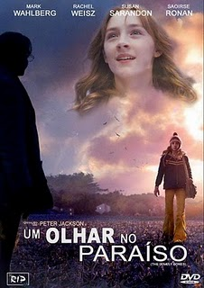
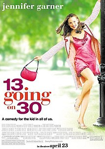

| |
I Love Movies |
 |
||||||||||||||||||||||

Detalhes Filmes
Click no gênero do filme que deseja, para ter detalhes sobre os filmes disponiveis desse gênero.
Animação
Comédia
Drama
Romance
Terror

Animação
voltar
A viagem de Chiriro

Chihiro e seus pais estão se mudando para uma cidade diferente. A caminho da nova casa, o pai decide pegar um atalho. Eles se deparam com uma mesa repleta de comida, embora ninguém esteja por perto. Chihiro sente o perigo, mas seus pais começam a comer. Quando anoitece, eles se transformam em porcos. Agora, apenas Chihiro pode salvá-los.
Direção: Hayao Miyazaki
Elenco: Rumi Hiiragi, Miyu Irino, Mari Natsuki
Ano: 2001
Alugue aqui!
Mais Detalhes
Castelo Animado

Uma bruxa lança uma terrível maldição sobre a jovem Sophie transformando-a em uma velha. Desesperada, ela embarca em uma odisseia em busca do mago Howl, um misterioso feiticeiro que pode ajudá-la a reverter o feitiço.
Direção: Hayao Miyazaki
Elenco: Chieko Baishô, Takuya Kimura, Ryûnosuke Kamiki
Ano: 2005
Alugue aqui!
Mais detalhes
Your Name

Mitsuha é a filha do prefeito de uma pequena cidade, mas sonha em tentar a sorte em Tóquio. Taki trabalha em um restaurante em Tóquio e deseja largar o seu emprego. Os dois não se conhecem, mas estão conectados pelas imagens de seus sonhos.
Direção: Makoto Shinkai
Elenco: Ryûnosuke Kamiki, Mone Kamishiraishi, Masami Nagasawa
Ano: 2017
Alugue aqui!
Mais detalhes
Comédia
voltar
Click
Um arquiteto casado e com filhos está cada vez mais frustrado por passar a maior parte de seu tempo trabalhando. Um dia, ele encontra um inventor excêntrico que lhe dá um controle remoto universal, com capacidade de acelerar o tempo. No início, ele usa o aparelho para acelerar qualquer momento tedioso, mas se dá conta de que está acelerando o tempo demais e deixando de viver preciosos momentos em família. Desesperado, ele procura o inventor para ajudá-lo a reverter o que fez.
Direção: Frank Coraci
Elenco: Adam Sandler, Kate Beckinsale, Christopher Walken
Ano: 2006
Alugue aqui!
Mais detalhes
Meninas Malvadas

A adolescente Cady Heron foi educada na África pelos seus pais cientistas. Quando sua família se muda para o subúrbio, nos Estados Unidos, Cady começa a frequentar a escola pública e recebe uma rápida introdução às leis de popularidade que dividem seus colegas. Sem querer, ela acaba no meio de um grupo de elite de estudantes apelidadas "as poderosas".
Direção: Mark Waters
Elenco: Lindsay Lohan, Rachel McAdams, Amanda Seyfried
Ano: 2004
Alugue aqui!
Mais detalhes
Pequena Miss Sunshine

O sonho da pequena Olive é participar do concurso de Pequena Miss Sunshine. Para isso, ela embarca em uma divertida e comovente viagem com o pai, o tio, o avô, o irmão e a mãe. A família precisa correr contra o tempo para que Olive chegue no horário e possa fazer a apresentação criada pelo seu avô.
Direção: Jonathan Dayton, Valerie Faris
Elenco: Abigail Breslin, Greg Kinnear, Paul Dano
Ano: 2006
Alugue aqui!
Mais detalhes
Drama
voltar
O Jogo Da Imitação

Em 1939, a recém-criada agência de inteligência britânica MI6 recruta Alan Turing, um aluno da Universidade de Cambridge, para entender códigos nazistas, incluindo o "Enigma", que criptógrafos acreditavam ser inquebrável. A equipe de Turing, incluindo Joan Clarke, analisa as mensagens de "Enigma".
Diretor: Morten Tyldum
Elenco: Benedict Cumberbatch, Keira Knightley, Matthew Goode
Ano: 2014
Alugue aqui!
Mais detalhes
A Procura Da Felicidade

Chris enfrenta sérios problemas financeiros e sua esposa, Linda, decide partir. Agora solteiro, ele precisa cuidar de Christopher, seu filho de cinco anos. Chris tenta usar sua habilidade como vendedor para conseguir um emprego melhor, mas só consegue um estágio não-remunerado. Seus problemas financeiros não podem esperar uma promoção e eles acabam despejados. Chris e Christopher passam a dormir em abrigos ou onde quer que consigam um refúgio, mantendo a esperança de que dias melhores virão.
Direção: Gabriele Muccino
Elenco: Will Smith, Thandiwe Newton, Jaden Smith
Ano: 2007
Alugue aqui!
Mais detalhes
Um Olhar Do Paraiso
Susie Salmon está voltando para casa quando é assassinada por George Harvey, um vizinho que mora sozinho. Os pais de Susie, Jack e Abigail, inicialmente se recusam a acreditar na morte da filha. Em meio às investigações, a polícia conversa com George mas não o coloca entre os suspeitos, mas a família passa a desconfiar dele. Susie, que agora está em um local entre o paraíso e o inferno, observa a situação e lida com o sentimento de vingança e a vontade de ajudar sua família a superar sua morte.
Direção: Peter Jackson
Elenco: Saoirse Ronan, Mark Wahlberg, Stanley Tucci
Ano: 2010
Alugue aqui!
Mais detalhes
Romance
voltar
De Repente 30
Jenna Rink é uma garota que está descontente com sua própria idade. Em seu 13º aniversário, ela faz um pedido: virar adulta. O pedido milagrosamente se torna realidade e, no dia seguinte, Jenna acorda com 30 anos de idade.
Diretor: Gary Winick
Elenco: Jennifer Garner, Mark Ruffalo, Judy Greer
Ano: 2004
Alugue aqui!
Mais detalhes
Perdida

Baseado no sucesso de vendas da autora Carina Rissi, o livro ''Perdida'' ganha uma adaptação e chega aos cinemas contando a história de Sofia (Giovanna Grigio). Uma garota moderna e independente, mas quando o assunto é amor, os únicos romances da sua vida são aqueles do universo literário de Jane Austen. Após utilizar um celular emprestado, algo misterioso acontece e ela é transportada para um mundo diferente, que se assemelha ao século XIX. Sofia é acolhida pela família do encantador Ian Clarke (Bruno Montaleone), enquanto tenta desesperadamente encontrar uma forma de retornar a sua vida. O que ela não sabia é que seu coração tinha outros planos.
Direção: Katherine Chediak Putnam, Dean Law, Luiza Shelling Tubaldini
Elenco: Giovanna Grigio, Bruno Montaleone, Nathália Falcão
Ano: 2023
Alugue aqui!
Mais detalhes
Tudo E Todas As Coisas
Confinada em sua casa devido a uma doença, uma garota de 18 anos, inteligente e cheia de imaginação, se apaixona pelo adolescente que mora ao lado.
Direção: Stella Meghie
Elenco: Amandla Stenberg, Nick Robinson, Ana de la Reguera
Ano: 2017
Alugue aqui!
Mais detalhes
Terror
voltar
A Casa de Cera

Jenna Rink é uma garota que está descontente com sua própria idade. Em seu 13º aniversário, ela faz um pedido: virar adulta. O pedido milagrosamente se torna realidade e, no dia seguinte, Jenna acorda com 30 anos de idade.
Direção: Jaume Collet-Serra
Elenco: Elisha Cuthbert, Chad Michael Murray, Paris Hilton
Ano: 2005
Alugue aqui!
Mais detalhes
Sexta-Feira 13

Clay vai à misteriosa floresta de Crystal Lake em busca de sua irmã desaparecida. Lá, ele encontra restos de velhas cabanas, aparentemente abandonadas. Apesar de ser avisado pelos oficiais e habitantes locais, ele resolve explorar o local juntamente com uma jovem, que está em um grupo que se formou para passar um final de semana de aventuras. O que eles não esperavam era encontrar Jason Voorhess, o assassino da máscara de hóquei.
Direção: Marcus Nispel
Elenco: Jared Padalecki, Amanda Righetti, Derek Mears
Ano: 2009
Alugue aqui!
Mais detalhes
Um Lugar Silencioso
Em uma fazenda nos Estados Unidos, uma família do Meio-Oeste é perseguida por uma entidade fantasmagórica assustadora. Para se protegerem, eles devem permanecer em silêncio absoluto, a qualquer custo, pois o perigo é ativado pela percepção do som.
Direção: John Krasinski
Elenco: Emily Blunt, John Krasinski, Millicent Simmonds
Ano: 2018
Alugue aqui!
Mais detalhes